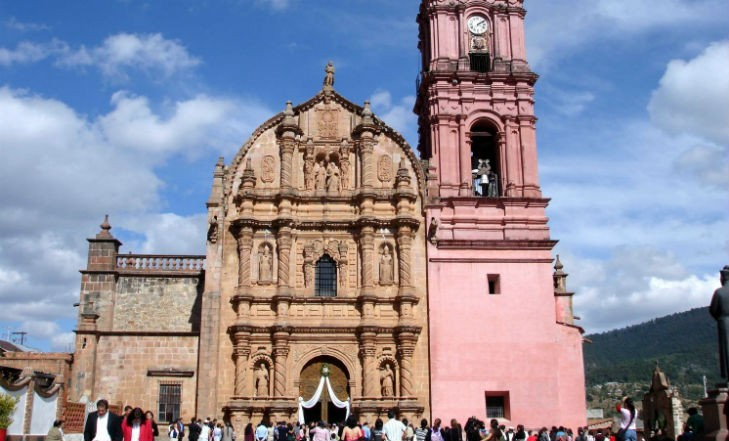
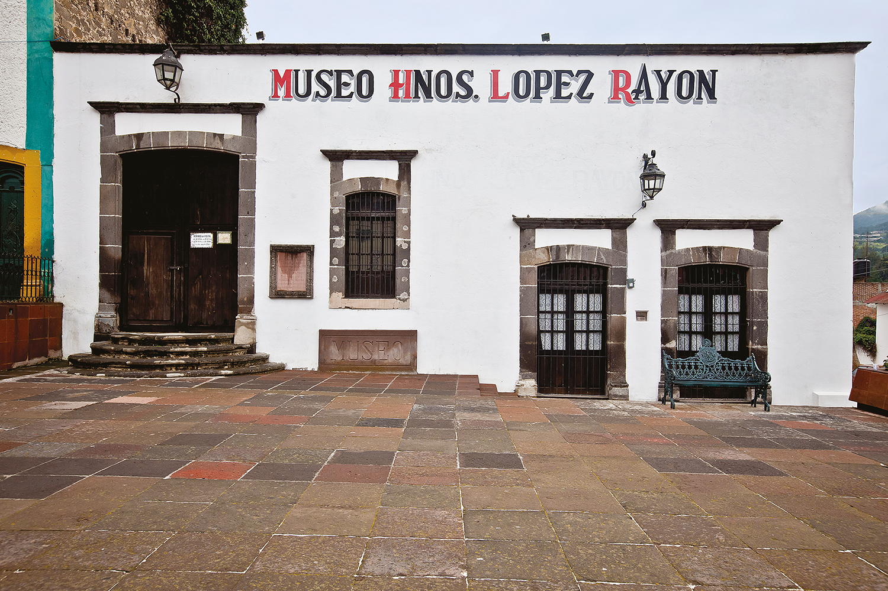
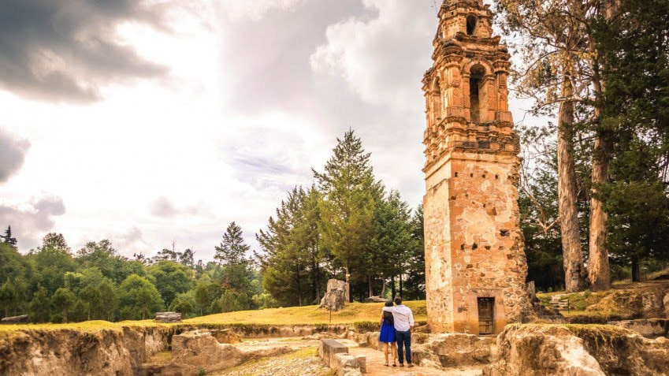
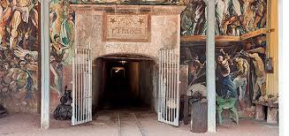

Santuario de Nuestra Señora del Carmen |

|
Es de estilo gótico y elaborado en cantera rosa y gris, compone el edificio más sobresaliente entre el paisaje de casas de tejas de color rojizo. Levantado en el siglo XVIII en pleno centro de la pobla3ión, cuenta con un altar traído desde Italia y con las bellas imágenes de la Virgen de la Inmaculada Concepción y de San José, de París. |
Museo Hermanos López Rayón |
 |
En este museo se puede aprender sobre el pasado minero de Tlalpujahua y cómo los hermanos López Rayón, originarios de este Pueblo Mágico, ayudaron durante la Independencia de México. Cuenta con una colección de 145 fotografías en las que se aprecia la mina Dos Estrellas, además de varias exposiciones temporales en las que usualmente se exhiben fotografías de fiestas tradicionales y pinturas de la mariposa monarca.
|
Torre del Carmen |
 |
En 1937 las aguas residuales y tó;xicas que provenían de la mina Dos Estrellas desembocaron en el barrio del Carmen con lo que se formó una especie de alud y toda la zona del pueblo quedó sepultada, lo que ocasionó la muerte de miles de trabajadores y de sus familias. Actualmente se puede visitar lo que quedó de la Iglesia del Carmen, su torre, que fue lo único que sobrevivió al triste acontecimiento. |
Mina Las Dos Estrellas |

|
Fue descubierta en 1899. De los años 1908 a 1913 fue la primera productora mundial de oro, lo que atrajo mucha inversión y tecnología, en su mayoría franco-inglesa. Durante la Revolución mexicana la mayoría de las minas del país cerraron; sin embargo, la mina Dos estrellas siguió funcionando aunque su producción salía en su mayoría hacia Inglaterra, por lo que México no se vio muy beneficiado por estas excavaciones. |